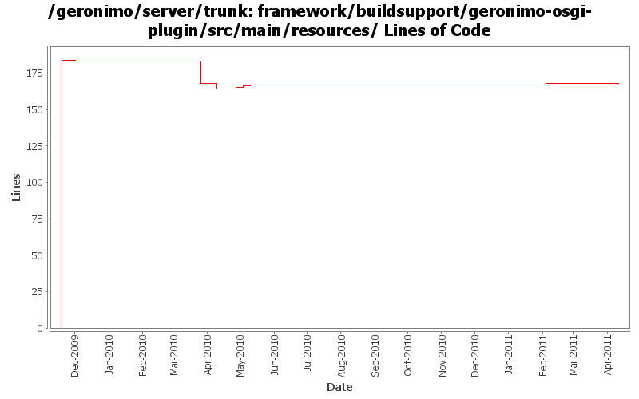

[root]/framework/buildsupport/geronimo-osgi-plugin/src/main/resources

| Author | Changes | Lines of Code | Lines per Change |
|---|---|---|---|
| Totals | 11 (100.0%) | 203 (100.0%) | 18.4 |
| gawor | 9 (81.8%) | 199 (98.0%) | 22.1 |
| rickmcguire | 1 (9.1%) | 3 (1.5%) | 3.0 |
| violalu | 1 (9.1%) | 1 (0.5%) | 1.0 |
GERONIMO-5885 Upgrade karaf from 2.1.2 to 2.2.1-SNAPSHOT
1 lines of code changed in 1 file:
remove some unused dependencies
4 lines of code changed in 1 file:
GERONIMO-5702: Update for Karaf 2.1.2. Based on patch from Viola Lu
1 lines of code changed in 1 file:
switch to karaf 1.6
1 lines of code changed in 1 file:
expose sun.reflect via system bundle in geronimo-osgi-plugin
1 lines of code changed in 1 file:
expose org.apache.geronimo.transformer in geronimo-osgi-plugin
1 lines of code changed in 1 file:
manage org.apache.felix.karaf.jaas.boot dependency version and expose the boot package via system bundle in geronimo-osgi-plugin
2 lines of code changed in 1 file:
more spec updates
0 lines of code changed in 1 file:
Fix build compile error, update the bundle verifier for bootstrap package changes
3 lines of code changed in 1 file:
expose sun.misc package via system bundle
5 lines of code changed in 1 file:
bunch of verify manifest improvments
184 lines of code changed in 1 file: